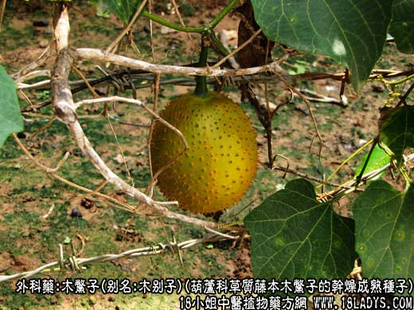
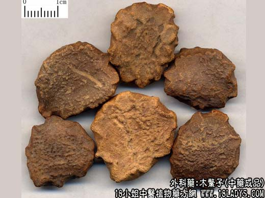
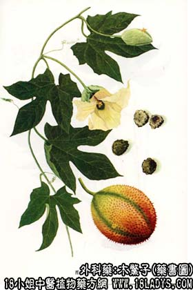

木鳖子为少常用中药。始载《开宝本草》。
别名：木别子、土木鳖。
来源：为葫芦科多年生草质藤本植物木鳖子的干燥成熟种子。野生或栽培。
产地：主产于广西、四川、湖北等地，此外湖南、贵州、云南、广东、安徽亦产。
采收加工：秋冬季果实成熟时采收。采摘后，剖开果实，出去果壳和瓤取出种子，晒干。或堆放容器内使其自然腐烂，然后冲去果肉，取出种子，洗净晒干。
性状鉴别：种子呈扁平近圆形，中间稍隆起，边缘两列相对的锯齿状突起，全形似鳖，直径约2~3厘米，厚约5毫米。表面灰褐色，粗糙，有凹陷的网纹。外壳质硬而脆，破开后，内有带灰绿色绒毛状薄膜的种仁，呈扁圆形，一端微尖（胚根所在），子叶二片，黄白色，富油质。有特殊油腻气，味苦，以种子饱满，外皮坚硬，内仁黄白色不泛油者为佳。
主要成分：含脂肪油、皂甙、甾醇和多糖（海藻糖）等。
药理作用：解毒、消肿、止痛。又动物实验证明，有降血压作用，但毒性较大，静脉或肌肉注射后，动物于数日后死亡。据近年来报道，木鳖子之皂甙能促进实验动物的外周血循环，抑制角叉菜素引起之足蹼水肿。
炮制：捣碎，生用。
性味：苦、微甘，温。有毒。
归经：入肝、大肠经。
功能：消肿，追毒。
主治：痈肿，瘰疬，疮毒，丹瘤，外用醋磨消肿毒。
临床应用：1、治痈疮肿痛，炎症不消者。可用木鳖子适量，醋磨调敷，有消炎、退肿、止痛作用。
2、治急性咽喉炎、扁桃体炎、咽喉肿痛者。可用木鳖子配山豆根、木香为末，吹咽喉，以消肿止痛，方如木鳖散。
3、治牙痛。用木鳖子磨醋，以棉花湿敷，有止痛作用。
4、治外痔、肛裂或肛周感染，局部有剧痛者。可用木鳖子3个，研细末，用水煎作热熏和浸洗，有止痛、消炎效果。
用量：外用适量。
处方举例：木鳖散：木鳖子g，山豆根6g，广木香6g，为末，吹咽喉部。